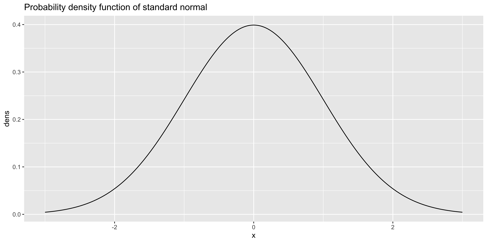

Descriptive statistics
- A statistic
- is a measurement of some attribute of a sample, computed by applying some function or algorithm to the sample. “Statistic” can refer both to the function and to the value it yields for a particular sample.
function(x){sum(sin(x))}is a statistic of the samplex, albeit not a particularly useful one.function(x){sum(x)/length(x)}is a more useful statistic (the arithmetic sample mean).- Descriptive statistics
- are used to quantitatively summarize some features of a sample.
- Estimators
- are statistics that are used to estimate a population parameter, that is a parameter of some statistical model of the data.
- Test statistics
- are compared to their sampling distribution under the null hypothesis in significance testing.
There is nothing qualitatively different between the statistics used for description, estimation, and testing. They are all functions of the sample that yield some value, and the only difference lies in how that value is used. For instance, the sample mean can be used to describe the sample, to estimate the population mean, or to test a hypothesis about the population mean.
Descriptive statistics are implicit estimators.
Although descriptive statistics are typically presented as non-inferential, as not relying on any statistical model of the data, in practice this is rarely the case: we choose which features of the data are worth describing based on (sometimes unstated) assumptions about the data-generating process. In other words, descriptive statistics are usually (at least implicitly) used as estimators.
For instance, let’s say I show you a sequence of coin flips: HHTHTTHTTTHHTT, and ask you to summarize its most relevant feature with one descriptive statistic. Which statistic do you use?
- If I tell you the coin might be slightly bent, and thus more likely to come up heads than tails, you would want to describe the proportion of heads in the sequence (\(6/14\)).
- If I tell you that the sequence was generated by a machine that aims to flip the coin an even number of times so as to repeat the previous flip outcome, you would want to summarize the proportion of repetitions (\(8/13\)).
- If I tell you that the sequence was generated by a machine that is designed to flip a coin indefinitely, but sometimes it goes awry and drops the coin, thus cutting the sequence short, you would want to summarize the length of the sequence (\(14\)).
In short, our choice of which aspects of the data are worth describing depend on how we think the data were generated, and thus which features of the data might be most useful to estimate properties of the data generating process. Although we are providing descriptive statistics, we really want to use them as estimators.
Describing central tendency.
The usual thing we want to do with some sample is calculate the “average,” by which we mean some measure of the “central tendency.”
- Central tendency
- Is a value that describes the “middle” of our data, in some sense.
- Examples of such values include various types of mean, the median, and the mode.
There are many types of “average,” which are more or less useful depending on our assumptions about where the data came from, but the conventional “average” is the arithmetic mean, which we will just call the “mean.”
Arithmetic mean (or just “mean”)
The arithmetic mean is usually denoted with a bar (as in \(\bar x\), “x-bar” is the sample mean of x):
\(\bar x = \frac{1}{n}\sum\limits_{i=1}^n x_i\)
Let’s take the yearly number of miles travelled on airlines between 1937 and 1960 as an example:
library(ggplot2) # using ggplot package for graphics
x = as.vector(airmiles) # casting time-series as vector -- ignore this
ggplot(data=data.frame(x=x), aes(x=x)) +
geom_histogram(binwidth=1000, fill='red', color="black") + # plot histogram.
geom_rug(color="blue") + # add rug of tick marks for unique observations
ggtitle("Histogram of yearly miles travelled by air (1937-1960") +
theme_bw() # nicer theme
We can calculate the sample mean in a number of ways:
sum(x)/length(x)## [1] 10527.83or
mean(x)## [1] 10527.83Sensitivity to outliers
You can think of the mean as the “balance” point of the data: if we think of each data point as having equal mass and each being arranged on a see-saw accordint to their values, then the further the value is away from the fulcrum, the more torque it will provide, and thus will push the see-saw down harder. The point where we would need to put the fulcrum to balance the see-saw is the sample mean.
This means that outliers (measurements that are far away from the rest of the data), will exert a big influence on what the mean is.
Median
The median is the value such that 50% of the data are bigger than that value, and 50% are smaller. (There is no conventional notation for the sample median.) Thus, the median literally picks out the point that’s in the middle of the sorted list of numbers, and does not care how much larger or smaller the values on either side are, so long as there are 50% of them on each side (very much unlike the mean).
median(x)## [1] 6431The median is also known as the 50th percentile, or the 0.5th quantile, so we can also estimate it with the empirical quantile function:
quantile(x, 0.5)## 50%
## 6431Mode
- The mode
- is the most common value in the data.
A “mode” function does not exist in R, because it is a rather odd statistic that is very unstable for most numerical data. Nonetheless, we can write a function to give us the most frequent values in a sample:
Mode = function(x){
ux = unique(x) # find all unique values
fx = tabulate(match(x,ux)) # count frequency of each unique value
return(ux[fx == max(fx)]) # return unique value(s) that have the highest frequency
}(Note that this function will return all the values that have the greatest frequency, so there may be many modes).
The mode is the only available measure of central tendency for categorical data, and often makes quite a bit of sense if we have discrete numerical data that have a small number of unique values compared to the number of total observations. For instance, the number of cylinders in car models surveyed in the mtcars data set, is conducive to a description of its mode:
ggplot(data=mtcars, aes(x=cyl)) +
geom_histogram(binwidth=1, fill='red', color="black") + # plot histogram.
geom_rug(color="blue") + # add rug of tick marks for unique observations
ggtitle("Histogram of number of cylinders in mtcars$cyl") +
theme_bw()
Mode(mtcars$cyl)## [1] 8For continuous, numerical data, the mode is very tricky to formalize because most of the values are unique. Consider our yearly air miles (still represented in x). There are length(x)=24 data points, of which length(unique(x))=24 are unique; consequently, repeated values of number of airmiles travelled per year, specified to the nearest mile, are very unlikely.
Nonetheless, if we look at the histogram, there does appear to be a mode – a peak that is higher than the others. However, this peak arises from binning the values.
ggplot(data=data.frame(x=x), aes(x=x)) +
geom_histogram(binwidth=1000, fill='red', color="black") + # plot histogram.
geom_rug(color="blue") + # add rug of tick marks for unique observations
ggtitle("Histogram of yearly miles travelled by air (1937-1960") +
theme_bw() # nicer themeIf we try to calculate the mode for airmiles, it returns all the values, because they are all “most frequent,” occuring only once in the sample.
Mode(x)## [1] 412 480 683 1052 1385 1418 1634 2178 3362 5948 6109 5981 6753 8003 10566 12528 14760 16769 19819 22362 25340
## [22] 25343 29269 30514We can try to coax the Mode to give us something more meaningful, by rounding, say to the nearest 10:
x.10 = round(x/10)*10
Mode(x.10)## [1] 25340The value this gives us is a little weird, because it so happened to be the only value that repeated in the set of airmiles rounded to 10: there are length(unique(x.10))=23 unique values out of 24 observations, meaning that the “mode” we got just happened to be the one number that repeated twice. Perhaps more rounding will help:
x.100 = round(x/100)*100
Mode(x.100)## [1] 1400 25300Now we have two modes again (both of them repeat twice). More rounding?
x.1000 = round(x/1000)*1000
Mode(x.1000)## [1] 1000This is more reasonable, with the “mode” occurring 4 times in the sample. But Maybe we should keep rounding?
x.10000 = round(x/10000)*10000
Mode(x.10000)## [1] 0So these data either have 24 modes (no rounding), a mode at 25,340 (rounding to nearest 10), two modes 1400 and 25300 (rounding to nearest 100), a mode at 1000 (rounding to nearest 1000), or a mode at 0 (rounding to nearest 10000). If we consider that a mode at 0 when rounding to 10000 covers the range [-5000,5000], and rounding to 1000 covers [500,1500], we have a somewhat coherent story about the most frequent interval, but a most frequent value does not exist.
Describing dispersion
Once we have established some measure of central tendency, we usually want to know something about the dispersion.
- Dispersion
- How spread out are the data around its central tendency. The variability of the data.
- Common examples include standard deviation/variance, range, interquartile range, etc.
Standard deviation and variance
When we summarize the central tendency with the mean, the natural measure of dispersion is the standard deviation or the variance.
- The sample variance
- is the average squared deviation from the mean.
- \(s^2 = \frac{1}{n-1}\sum\limits_{i=1}^n (x_i-\bar x)^2\)
- in R:
var(x)
(For somewhat technical reasons we calculate the sample variance by dividing by \(n-1\) rather than \(n\))
We can calculate this manually, or using the var function:
# x still refers to the airmiles data.
sum((x-mean(x))^2)/(length(x)-1) # calculating sample variance manually## [1] 100667654var(x)## [1] 100667654The variance is intimately related to two other quantities:
- The sum of squares
- Is the sum of squared deviations from (in this context) the mean, without taking the average by dividing by \(n-1\).
We usually denote the sum of squares as the function \(\operatorname{SS}(x)\), or simply as SSX.
\(\operatorname{SS}[x] = \sum\limits_{i=1}^n (x_i-\bar x)^2\)
We can calculate the sum of squares manually with
sum((x-mean(x))^2)## [1] 2315356053- The sample standard deviation
- Is the square root of the variance, thus making it interpretable in units of \(x\).
- \(s = \sqrt{s^2} = \sqrt{\frac{1}{n-1}\sum\limits_{i=1}^n (x_i-\bar x)^2}\)
- in R:
sd(x)
Which we can calcuate either manually or using sd:
sqrt(sum((x-mean(x))^2)/(length(x)-1)) # calculating sample standard deviation manually## [1] 10033.33sd(x)## [1] 10033.33Just to be clear here about the relationships of the sum of squares of x, the sample variance of x, and the standard deviation of x.
\(\operatorname{SS}[x] = \sum\limits_{i=1}^n (x_i-\bar x)^2\)
\(s^2 = \frac{1}{n-1} \operatorname{SS}[x]\)
\(s = \sqrt{s^2}\)
Or in R:
ss.x = sum((x-mean(x))^2)
var.x = ss.x / (length(x) - 1)
sd.x = sqrt(var.x)Although the standard deviation and variance are perhaps the most common descriptions of the dispersion of numerical data, the sum of squares is not a useful summary of dispersion, because it will mostly reflect the sample size: it will grow as \(n\) increases because it is a sum over all data points without dividing by \(n\) in any way.
Standard deviation and variance care very much about extreme values, because they are based on the sum of squared deviations, thus a value very far from the mean will exert a great influence, as its squared deviation will be very large. In this sense, these measures are not robust to extreme values or outliers.
Median (or mean) absolute deviation (MAD)
If we calculate central tendency as the median, likely because we want to take advantage of its robustness to extreme values, we probably also want to calculate dispersion around the median in a manner that is somewhat robust to extreme values.
- Median absolute deviation (from the median)
- is a measure of dispersion that is as described: the median absolute deviation from the median
- \(\operatorname{MAD}[x] = \operatorname{Median}\left[{\lvert{x_i-m}\rvert}\right]\), (where \(\lvert x \rvert\) denote the absolute value, and \(m\) denotes the median of \(x\), and \(\operatorname{Median}[w]\) yields the median of \(w\).)
- or in R:
mad(x)
We can calculate this in R manually or using mad():
median(abs(x-median(x)))## [1] 5563.5mad(x)## [1] 8248.445Oops – these give us different answers. That’s because the mad() function by default adjusts the raw median absolute deviation by a constant (~1.4826) to try to make it an estimator for the standard deviation of normally distributed data.
median(abs(x-median(x)))*1.4826## [1] 8248.445The median absolute deviation is more robust to outliers and skewed distributions than the mean because it (a) considers the absolute value of deviations, rather than the squared deviations, and (b) calculates the median absolute deviation, rather than the average, thus effectively not caring how large the largest deviations are.
There is ample opportunity for confusion because “MAD” sometimes refers to the “mean absolute deviation,” and in general an “average absolute deviation” may refer to deviations from any measure of central tendency (mean, median, mode, or something else), and the average may be the mean or the median, or even something else. We will try to stick to using MAD to refer to the median absolute deviation from the median.
Quantile measures of dispersion (e.g., Range and interquartile range).
There are some other measures of dispersion that rely on the distribution of data in the sample without reference to the central tendency: they are concerned with the distance between percentiles (quantiles) in the sample, rather than the distance to some measure of central tendency. The most straight forward of these would be the range, but the interquartile range is usually more useful.
- Range
- is the distance between the smallest and largest value in the sample.
- in R:
max(x)-min(x)
In R, the range(x) function returns the smallest and largest values in x, rather than the distance between them, but we can calculate the range in a number of ways:
range(x)## [1] 412 30514diff(range(x))## [1] 30102max(x)-min(x)## [1] 30102The range is obviously very sensitive to outliers and extreme values, since it only considers the two most extreme values in its definition. This is a bit undesirable, so we might want to consider the range that disregards the extremes.
- The interquartile range (IQR)
- Is the distance between the 25th and 75th percentile
- In
R:IQR(x)
The interquartile range considers the 1st and 3rd “quartile,” that is the first and third boundary between data points if we divide all the values into four equal-n bins. These would more commonly be called the 25th and 75th percentile, or the 0.25th and 0.75th quantile.
quantile(x, c(0.25, 0.75)) # the 25th and 75th percentile. (1st and 3rd quartile)## 25% 75%
## 1580.0 17531.5diff(quantile(x, c(0.25, 0.75))) # the distance between them: the interquartile range## 75%
## 15951.5IQR(x) # R's built-in interquartile range function.## [1] 15951.5Because IQR only considers the values at the 25th and 75th percentile, it does not care how extreme the extreme values are, and is thus quite robust to outliers.
Entropy
There are no conventional measures of dispersion for categorical data: no measures of average deviation from the central tendency, or even rank-based measures of range, make sense. However, sometimes it might be desirable to quantify the ‘dispersion’ of a categorical distribution as a measure of how “not peaky” it is.
Let’s consider the HairEyeColor data set, which we will manipulate a bit to extract a vector of category labels corresponding to hair color:
haireye.df = as.data.frame(HairEyeColor) # convert table to data frame.
haireye.df = haireye.df[rep(row.names(haireye.df), haireye.df$Freq), c("Sex", "Hair", "Eye")]
# replicate to have unique observations, rather than counts.
ggplot(data=haireye.df, aes(x=Hair)) +
geom_bar(fill='red', color="black") + # plot histogram.
ggtitle("Histogram of hair color") +
theme_bw() The mode of hair color makes quite a bit of sense: Mode(hair)=Brown, but how do we measure how “peaky” this distribution is?
I would advocate using a measure of “entropy” over the sample frequencies:
- Entropy
- A measure of how “unpredictable” a categorical random variable is – it indicates how much information (in bits) you get from making an observation.
- \(H(X) = - \sum\limits_x P(x) \log_2\left[P(x)\right]\), where \(\log_2\) denotes the base 2 logarithm.
We can write a function in R to calculate the entropy of a sample:
Entropy = function(x){
ux = unique(x) # find all unique values
fx = tabulate(match(x,ux)) # count frequency of each unique value
px = fx/sum(fx) # convert frequencies to proportions (probabilities)
return(-sum(px*log2(px))) # return entropy over unique values
}
Entropy(haireye.df$Hair)## [1] 1.798227Entropy is a measure of information, rather than dispersion, so a variable that can take on more unique values, will usually have a higher entropy. For instance, consider participant sex in the HairEyeColor data:
ggplot(data=haireye.df, aes(x=Sex)) +
geom_bar(fill='red', color="black") + # plot histogram.
ggtitle("Histogram of sex") +
theme_bw()
Entropy(haireye.df$Sex)## [1] 0.9976193
While the distribution of hair color looks quite a bit “peakier,” it’s entropy (1.7982269) is higher than the entropy of the very not-peaky distribution of sex (0.9976193), because there are four different hair colors, and only two sexes in the data.
Perhaps a more intuitive measure of “peakiness” would be entropy normalized to the maximum entropy for that number of alternatives:
RelativeEntropy = function(x){
# calculate maximum entropy for a variable with the same number of unique values.
uniform.p = rep(1/length(unique(x)), length(unique(x)))
maxent = -sum(uniform.p*log2(uniform.p))
# return relative entropy
return(Entropy(x)/maxent)
}Relative entropy gives us a more intuitive measure of lack-of-peakiness that reflects the number of possible values: RelativeEntropy(haireye.df$Hair)=0.8991135 and RelativeEntropy(haireye.df$Eye)=0.9139308.
Although neither the entropy nor relative entropy statistics we defined here are conventional, I find them to be sometimes useful. Moreover, they highlight the fact that a descriptive statistic can be whatever we choose: if we think some particular measure of a sample is a useful description of some feature of the data, we can use it as a statistic.
Descriptions of shape.
For numerical data we often want to describe not just the central tendency and dispersion, but also its shape.
Consider for instance the two samples x and y (that we create below to have mean \(m\) and standard deviation \(s\)):
library(gridExtra) # used to make plots side by side.
s = 7
m = 50
x = rnorm(1000)
x = (x-mean(x))/sd(x)*s + m
y = rexp(1000)
y = (y-mean(y))/sd(y)*s + m
sprintf("mean(x): %0.2f mean(y): %0.2f", mean(x), mean(y))## [1] "mean(x): 50.00 mean(y): 50.00"sprintf(' sd(x): %0.2f sd(y): %0.2f', sd(x), sd(y))## [1] " sd(x): 7.00 sd(y): 7.00"g1 = ggplot(data.frame(x=x), aes(x=x))+
geom_histogram(binwidth=0.5, fill='red', color="black") + # plot histogram.
ggtitle("Histogram of x") +
theme_bw()
g2 = ggplot(data.frame(y=y), aes(x=y))+
geom_histogram(binwidth=0.5, fill='red', color="black") + # plot histogram.
ggtitle("Histogram of y") +
theme_bw()
grid.arrange(g1,g2, ncol=2)
They have exactly the same sample mean and sample standard deviation, but clearly look different. That difference in how they look is called the “shape.” There are two statistics that are most commonly used to describe the shape of a distribution: its skewness and kurtosis.
Skewness
- The skewness
- of a distribution measures whether the positive or negative tail is heavier.
- it is roughly the average of the cubed “z-scores” (see expectations)
- (although calculating it from a sample requires some correction)
- in
R, we calculate it usingskewness()from themomentspackage.
The skewness of the variable x should be around 0, as it is symmetric, the skewness of y should be positive, as it has a heavy “positive” tail.
library(moments)
skewness(x)## [1] -0.05165289skewness(y)## [1] 2.004362We can construct a new variable that will have negative skewness:
z = -1*rexp(1000)
z = (z-mean(z))/sd(z)*s + m
ggplot(data.frame(z=z), aes(x=z))+
geom_histogram(binwidth=0.5, fill='red', color="black") + # plot histogram.
ggtitle("Histogram of z") +
theme_bw()
skewness(z)## [1] -2.090862Skew and central tendency.
Since the mean very much cares about extreme values, the median only cares about the rank of values, and the mode only cares about the most common value, they are differently influenced by the skew of the data.
Consider the geometrically distributed variable X:
X = rgeom(10000, 0.1)
df_stats = data.frame(statistic = c("Mode", "Median", "Mean"), val=c(Mode(X), median(X), mean(X)))
ggplot(data.frame(X=X), aes(x=X))+
geom_histogram(binwidth=5, fill='lightgray') + # plot histogram.
ggtitle("Histogram of X") +
geom_vline(data=df_stats, aes(xintercept=val, color=statistic), size=2, show_guide=TRUE)+
scale_color_manual(values = c("#dd0000","#00bb00", "#0000ff"), name = "Central tendency statistic")+
theme_bw()The mean is most drawn to the heavy positive tail, the median second, and the mode least of all.
Kurtosis
- The (excess) kurtosis
- of a distribution measures how heavy the tails are (compared to a normal distribution)
- it is roughly the average of the “z-scores” to the fourth power (for more see expectations)
- (although calculating it from a sample requires some correction)
- in
R, we calculate it usingkurtosis()-3from themomentspackage.
The excess kurtosis describes whether the tails are much like a normal distribution (kurtosis=0), whether the tails are heavy/long (meaning the distribution is quite peaky for its mean and variance; kurtosis>0), or whether its tails are short (meaning the distribution is quite boxy for its mean and variance; kursosis<0).
Let’s consider a few variables with different kurtosis (but all with roughly the same mean, sd and skew):
library(PearsonDS)
s = 7
m = 50
k = c(-1, 0, 5)
X = list()
gplots = list()
X.kurtosis = c()
for(i in 1:length(k)){
varname = paste('X.', i, sep="")
X[[i]] = rpearson(1000, moments=c(0, 1, 0, k[i]+3))
X[[i]] = (X[[i]]-mean(X[[i]]))/sd(X[[i]])*s + m
gplots[[i]] = ggplot(data.frame(x=X[[i]]), aes(x=x))+
geom_histogram(fill='red', color="black") + # plot histogram.
ggtitle(paste("Histogram of ", varname, sep="")) +
theme_bw()
X.kurtosis[varname] = kurtosis(X[[i]])-3
}
grid.arrange(gplots[[1]], gplots[[2]], gplots[[3]], ncol=3)These variables (stored in the list X) have kurtosis (stored in the named vector X.kurtosis increasing from left to right:
X.kurtosis## X.1 X.2 X.3
## -1.030450 -0.162459 2.057358